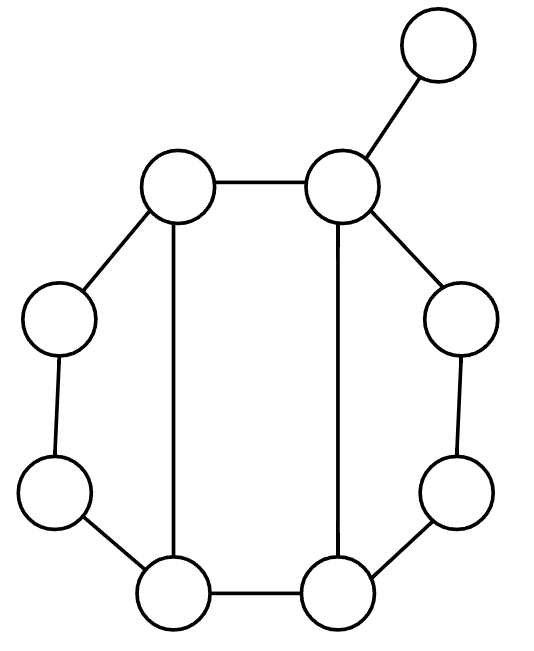
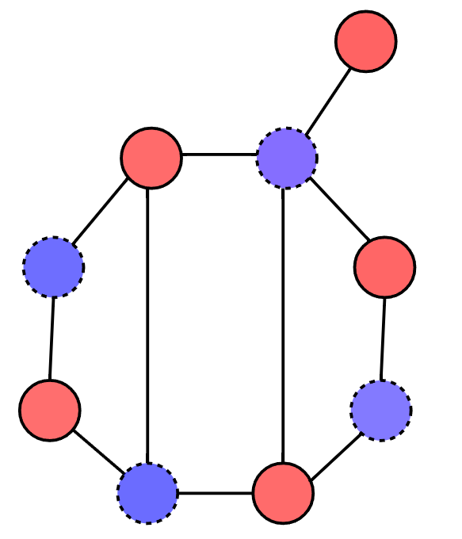
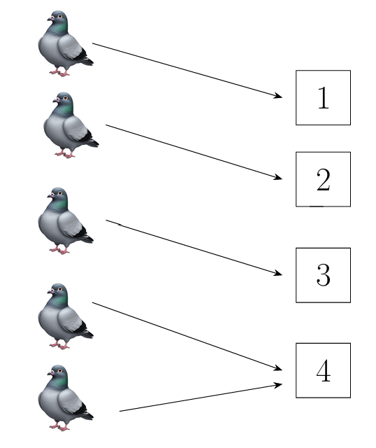

Lecture 7: Pigeonhole Principle & Its Applications#
Warmup#
Question 9
We want to avoid radio interference in a given region. If 2 transmitters are within 10 miles of each other, we will ensure they use different frequencies. To do so, we will form a graph, \(G\), with vertices as transmitters and edges will exist only between vertices whose transmitters are within 10 miles of each other.
How many frequencies are required for a given region (in terms of \(G\))?
Answer
A potential answer is \(\chi(G)\). We can use graph coloring!
Recall that a graph is k-colorable if we can assign vertices one of \(k\) colors such that no edge has 2 with vertices with the same color.
Question 10
Is the following graph 2-colorable? How do you know?
{kind=link}

Answer
It is! Try 2-coloring it. Here’s a 2-coloring using red and blue:
{kind=link}

But, what you might do is think about how you tried 2-coloring the graph. You likely did not have every color all at once for every vertex. Rather, you assigned one vertex a color. Then, you likely looked at the vertices that share an edge with the vertex and assigned them the opposite color. Then, you likely repeated the process on these new vertices.
This is an algorithmic way of thinking about the graph coloring problem. This is a great example of what we will be covering in the “Graph Algorithm” section of the class.
For the curious, the way Garrett chose this graph is by the fun result we’ll prove later: “A graph is 2-colorable if and only if it has no odd-cycles”. You can verify this graph has no odd-cycles (and so it is 2-colorable).
Pigeonhole Principle#
Theorem 8 (Pigeonhole Principle (P.H.P.))
If \(n+1\) pigeons are placed in \(n\) pigeonholes, there is at least 1 pigeonhole with at least 2 pigeons.
Proof. Consider the first \(n\) pigeons. Each is placed. If there is already 2 pigeons in 1 pigeonhole, the proof is done. So, assume there is not yet 2 pigeons in 1 pigeonhole. Since there are only \(n\) pigeonholes, each of the \(n\) pigeons has its own and there is no pigeonhole left empty. The \(n+1\)-st pigeon will have to placed into one of them. So, there will be 2 in one pigeonhole.
{kind=link}

Fig. 15 Too many pigeons, not enough places to put them.#
In the following version of the pigeonhole principle, we use \(\lfloor x\rfloor\) to mean the greatest integer less than \(x\) (rounding down). For example, \(\lfloor 2.5 \rfloor = 2\) and \(\lfloor \pi \rfloor = 3\). We will exclude the proof of the following since the argument is so similar to above.
Theorem 9 (Another Pigeonhole Principle)
If \(m\) pigeons are placed in \(n\) pigeonholes, at least 1 pigeonhole has \(\lfloor \frac{m-1}{n}\rfloor\) pigeons.
2 great examples of these in action:
Show that at least 2 people in our class share a birth-week.
Show that at least 6 people in our class share a birth-month.
Question 11 (To Ponder)
Show that for a graph \(G\) on \(n\) vertices and \(\binom{n}{2}+1\) edges, the graph \(G\) is not simple. (You can use P.H.P.)
Applying Pigeonhole Principle#
Theorem 10
For a graph \(G\), \(\chi(G)\geq \omega(G)\).
Proof. Let \(G\) have a clique of size \(\omega(G)\) and a \(\chi(G)\)-coloring. Let the vertices in the clique be the pigeons. Let the colors \(\{1,2,3,\dots, \chi(G)\}\) in the \(\chi(G)\)-coloring be the pigeonholes. By placing pigeons in pigeonholes, we are assigning the vertices of the clique to colors.
Note that for a clique, every vertex is connected to every other vertex. So, if two pigeons are in one pigeonhole, the edge that the vertices share will have two of the same color. This is not a valid coloring.
Assume \(\chi(G)<\omega(G)\). By P.H.P., there must be two vertices assigned the same color. This is not a valid coloring. So, it must be the case that \(\chi(G)\geq \omega(G)\).
Theorem 11
Let \(G=(V,E)\) be a graph. Then, \(\alpha(G)\geq \frac{|V|}{\chi(G)}\).
Proof. Let us consider a \(\chi(G)\)-coloring. Since we have a coloring, all the vertices of a single color form an independent set. That is, for each color \(i=1,2,\dots, \chi(G)\), it must be the case that no edge has two vertices of the color \(i\). Since there are \(|V|\) vertices in the graph, the average size of these color-based independent sets is \(\frac{|V|}{\chi(G)}\). By P.H.P., there must be an independent set at least as big as \(\frac{|V|}{\chi(G)}\). So, the maximum of the independent set sizes, \(\alpha(G)\), has to be at least as big as \(\frac{|V|}{\chi(G)}\) \left(\(\alpha(G)\geq \frac{|V|}{\chi(G)}\)\right).